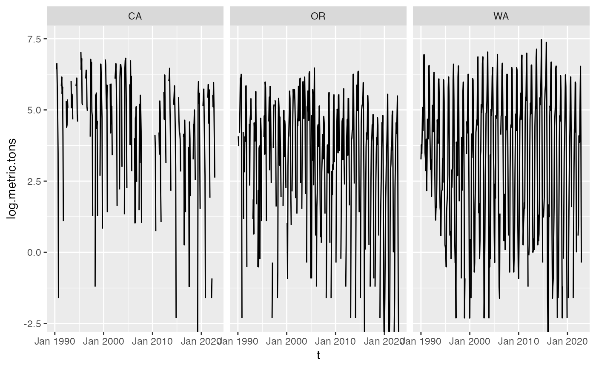

Monthly and annual Chinook salmon commercial landings
chinook.RdMonthly (WA, OR and CA) and yearly (AK, CA, MI, OR, PA, and WA) data on commercial landings and value of Chinook salmon. Yearly data were downloaded from the NOAA Fisheries, Fisheries Statistics Division and the monthly data were downloaded from PacFIN.
Usage
data(chinook)Format
Objects of class "data.frame". Columns are Year,
Month (if monthly), Species, State, log.metric.tons, metric.tons, and value.usd (USD)
Details
There are two datasets included: chinook.month and chinook.year. The monthly data are available from 1990 and the annual data are available from 1950. The raw data and R script to process the data are in the inst/original_data folder.
From the NOAA Fisheries Statistics Divison: "Collecting these data is a joint state and federal responsibility. State-federal systems gather landings data from state-mandated fishery trip-tickets, landing weighout reports from seafood dealers, federal logbooks of fishery catch and effort, and shipboard and portside interviews and biological sampling of catches. State fishery agencies are usually the main collectors of these data, though they and NOAA Fisheries gather data jointly in some states. Surveys are done differently in different states; NOAA Fisheries takes supplemental surveys to ensure that the data from different states and years are comparable."
In addition from NOAA Fisheries Statistics Division: "Statistics for each state represent a census of the volume and value of finfish and shellfish landed and sold at the dock, not an expanded estimate of landings based on sampling data. The main statistics collected are the pounds and ex-vessel dollar value of landings identified by species, year, month, state, county, port, water, and fishing gear. Most states get their landings data from seafood dealers who submit monthly reports of the weight and value of landings by vessel. Increasingly, though, states are getting landings data from mandatory trip-tickets—filled out by seafood dealers and fishermen at the end of every fishing trip, indicating their landings by species."
References
NOAA Fisheries Office of Science and Technology, Commercial Landings Query, Available at: www.fisheries.noaa.gov/foss, Accessed 14 April 2023
Pacific Fisheries Information Network (PacFIN) retrieval dated 14 April 2023, Pacific States Marine Fisheries Commission, Portland, Oregon (www.psmfc.org). Available at https://reports.psmfc.org/pacfin
Examples
data(chinook)
dat <- subset(chinook.month, state="WA")$log.metric.tons
#> Warning: In subset.data.frame(chinook.month, state = "WA") :
#> extra argument ‘state’ will be disregarded
datts <- ts(dat, start=c(1990,1), frequency=12)
plot(datts)
ggplot(
chinook.month %>%
mutate(t = zoo::as.yearmon(paste(Year, Month), "%Y %b")),
aes(x=t, y=log.metric.tons)) +
geom_line() +
facet_wrap(~State)
#> Warning: The `trans` argument of `continuous_scale()` is deprecated as of ggplot2 3.5.0.
#> ℹ Please use the `transform` argument instead.
#> Warning: Removed 5 rows containing missing values or values outside the scale range
#> (`geom_line()`).
